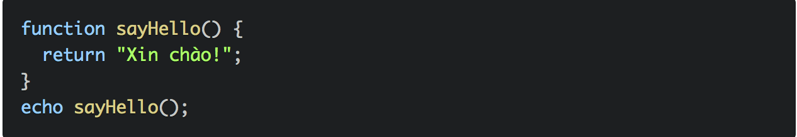
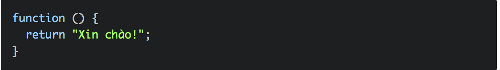
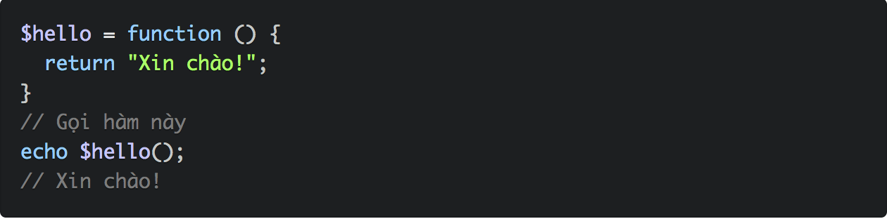
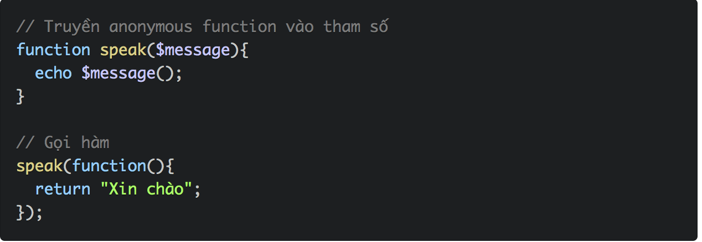
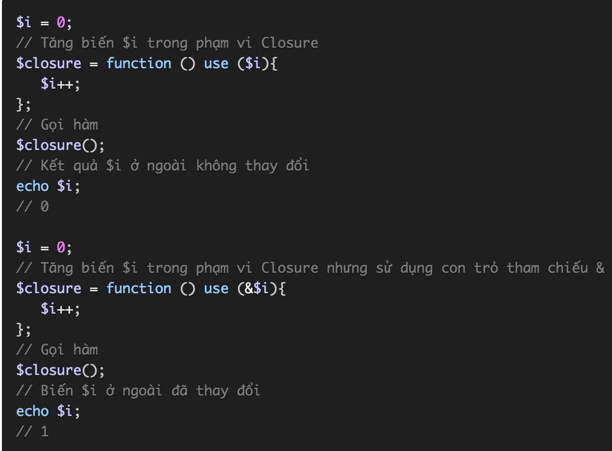
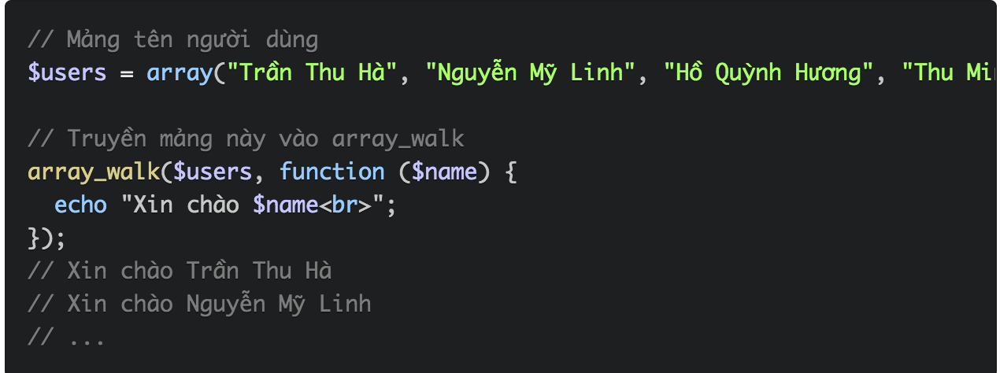

Hàm nặc danh là một hàm không có tên và Lambda là một hàm nặc danh có thể được gán vào một biến hoặc truyền vào một hàm khác như một tham số
 Do hàm nặc danh không có tên nên bạn cần gán nó với một biến hoặc truyền nó vào như một tham số:
Truyền hàm nặc danh vào như tham số.
Để cập nhật được giá trị gốc chúng ta sử dụng con trỏ tham chiếu & trong PHP
Closure là rất hữu dụng khi sử dụng các hàm PHP mà chấp nhận một hàm callback kiểu như array_map, array_filter...
